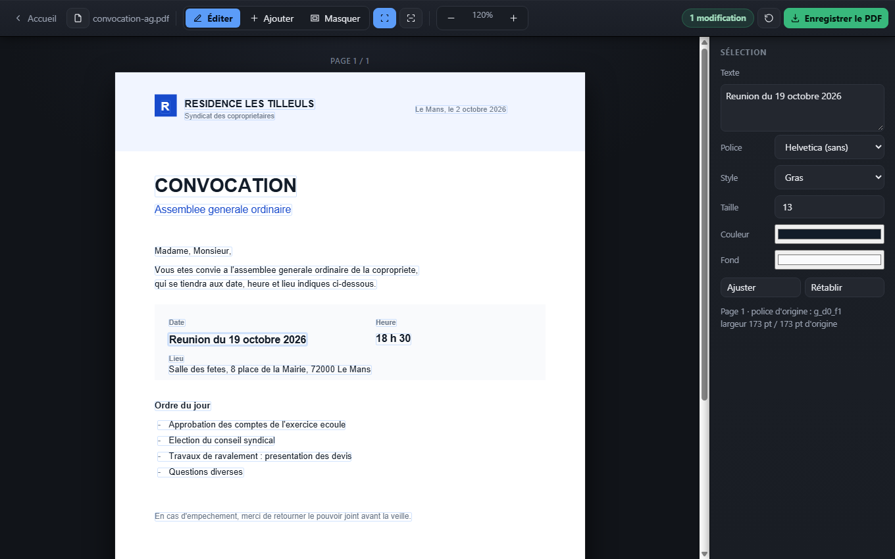

Pas une annotation collée par-dessus : vous cliquez sur une ligne du document, vous la réécrivez, vous enregistrez. Même sur un scan. C'est la fonction que les autres services font payer.
Réunion du 12 octobre
Réunion du 19 octobre

La date a été réécrite dans le document, à sa place exacte.
L'éditeur
Pas de menu à explorer ni d'option à deviner : vous ouvrez le document, vous cliquez sur ce qui ne va pas, vous enregistrez.
Chaque ligne du document devient un bloc cliquable. Vous la réécrivez, exactement à la même place, avec sa police et sa couleur retrouvées automatiquement.
Si la page est une image, la reconnaissance de caractères démarre toute seule à l'ouverture, en français, et rend chaque ligne modifiable.
Une date, un numéro, une signature dactylographiée : posez le texte où vous cliquez, avec la police, la taille et la couleur de votre choix.
Couvrez un montant ou une adresse en glissant la souris. La couleur du fond est relevée sur la page, le rectangle se fond dedans.
La boîte à outils
Convertir dans les deux sens, assembler, extraire. Chaque outil a sa page, avec ce qu'il conserve et ce qu'il ne reprend pas, annoncé avant que vous commenciez.
Ce qui change vraiment
Les éditeurs en ligne vous laissent volontiers ajouter du texte par-dessus le document. Mais corriger une ligne déjà écrite — ce pour quoi vous êtes venu — demande presque toujours un abonnement. Et votre fichier est parti sur leurs serveurs avant même que vous le sachiez.
Avant de commencer
Rien, et il n'y a rien à acheter : pas de version payante, pas d'essai limité, pas de filigrane. Y compris la correction du texte existant et la reconnaissance des scans, que les services en ligne réservent presque tous à leurs formules payantes. La raison est simple : chez eux, chaque document consomme du temps de serveur. Ici, c'est votre ordinateur qui travaille, donc il n'y a rien à facturer.
Oui. Le PDF est ouvert et modifié par votre navigateur ; aucune donnée n'est envoyée. Le site ne contient d'ailleurs aucun code serveur : il ne pourrait pas recevoir votre fichier même s'il le voulait. Vous pouvez le vérifier en coupant votre connexion une fois la page chargée — tout continue de fonctionner.
Non, et c'est important : le texte remplacé est recouvert visuellement mais reste présent dans le fichier — un copier-coller peut le retrouver. Pour supprimer réellement une donnée sensible, masquez la zone puis réimprimez le résultat en PDF (Imprimer → Enregistrer au format PDF) : l'ancien texte disparaît alors pour de bon.
Le texte est réécrit dans une police standard proche — Helvetica, Times ou Courier — choisie automatiquement d'après le document, avec le gras détecté en comparant la largeur réelle du texte aux métriques. Sur une police courante le résultat est très proche ; sur une police très typée, la différence se voit. Le panneau de droite permet de la corriger à la main.
Aucune limite imposée. La seule contrainte est la mémoire de votre ordinateur, et les pages sont affichées au fur et à mesure du défilement pour rester fluides même sur un document épais.
Oui. Une fois la page chargée, vous pouvez couper Internet. Le code est également téléchargeable depuis le dépôt public pour un usage entièrement local, serveur de développement compris pour la reconnaissance de caractères.
Déposez-le, corrigez ce qui ne va pas, repartez avec le fichier. Rien d'autre à faire.
Modifier un PDF maintenantGratuit, sans compte, et votre document ne quitte pas votre ordinateur.